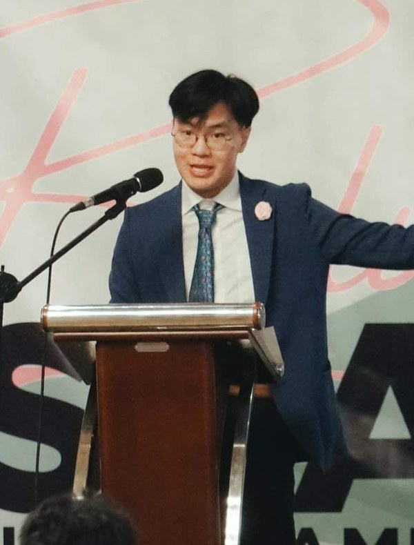

Energy & Digital Markets
Ongoing research on the economics of energy and digital markets — examining how market structure, regulation, and policy shape outcomes in these sectors — with Professors Hunt Allcott and Omer Karaduman.
Pre-doctoral Research Fellow, Stanford Institute for Economic Policy Research (SIEPR)
robert.leung@stanford.edu · rnrleung@gmail.com · Curriculum Vitae

I am a pre-doctoral research fellow at the Stanford Institute for Economic Policy Research (SIEPR), where I study the economics of energy and digital markets under Professors Hunt Allcott and Omer Karaduman. My research broadly tackles questions of market design, regulation, and public policy. Most people know me as Tobi.
Before Stanford, I completed my MSc in Econometrics and Mathematical Economics (EME) at the London School of Economics and a BS in Applied Mathematics at the Ateneo de Manila University. Outside of work, I spent my university years in competitive debating (winning the 2023 World Championship) — and now coach the wonderful, rambunctious children of WSDC Philippines.
Ongoing research on the economics of energy and digital markets — examining how market structure, regulation, and policy shape outcomes in these sectors — with Professors Hunt Allcott and Omer Karaduman.
Using Philippine mayoral elections and public procurement records, this paper studies whether dynastic succession preserves government–supplier relationships. In close open-seat races, a relative's victory sharply raises the survival and procurement share of the outgoing administration's suppliers — evidence that political families transmit relationship-specific economic capital across individual officeholders.
A staggered difference-in-differences study of California's wildfire insurance moratoria, showing that a moratorium designation itself acts as a public signal of future risk — driving large, persistent home-value declines even outside fire perimeters, alongside shifts in FAIR Plan enrollment, new listings, and mortgage lending.
A network-analytic study of political dynasties in the Philippines, measuring how political kinship networks concentrate power and shape local governance, using graph-theoretic metrics applied to a novel dataset of family and electoral linkages.
The largest open-source dataset of Philippine national and local election results — every winning candidate since 2004 and full candidate-level vote counts since 2016. Non-partisan and volunteer-run, it grew out of my undergraduate thesis on political dynasties and is fully reproducible from the raw COMELEC scrapes.